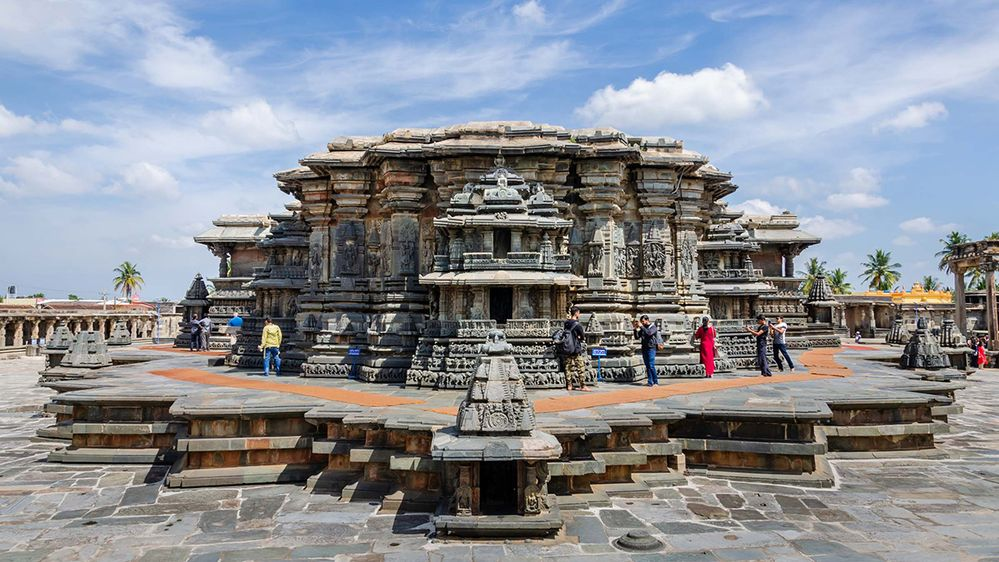
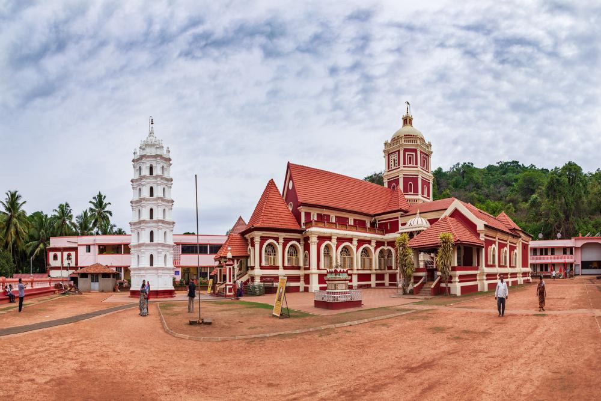
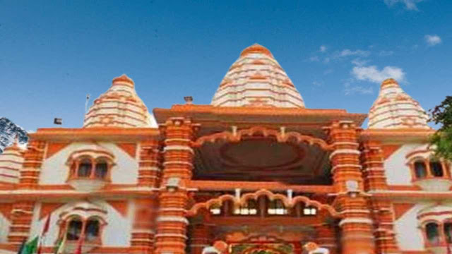
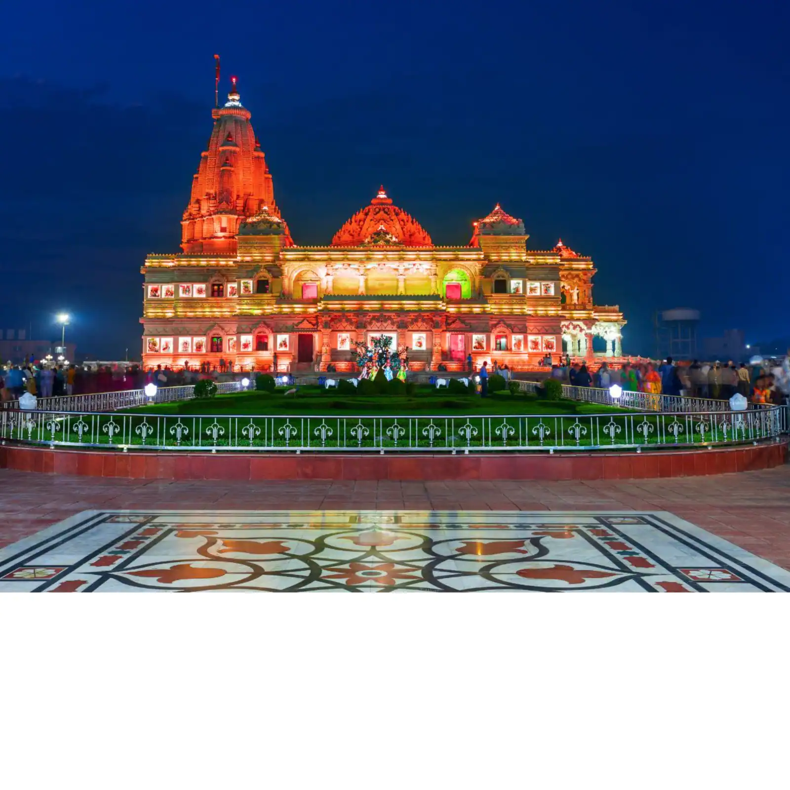
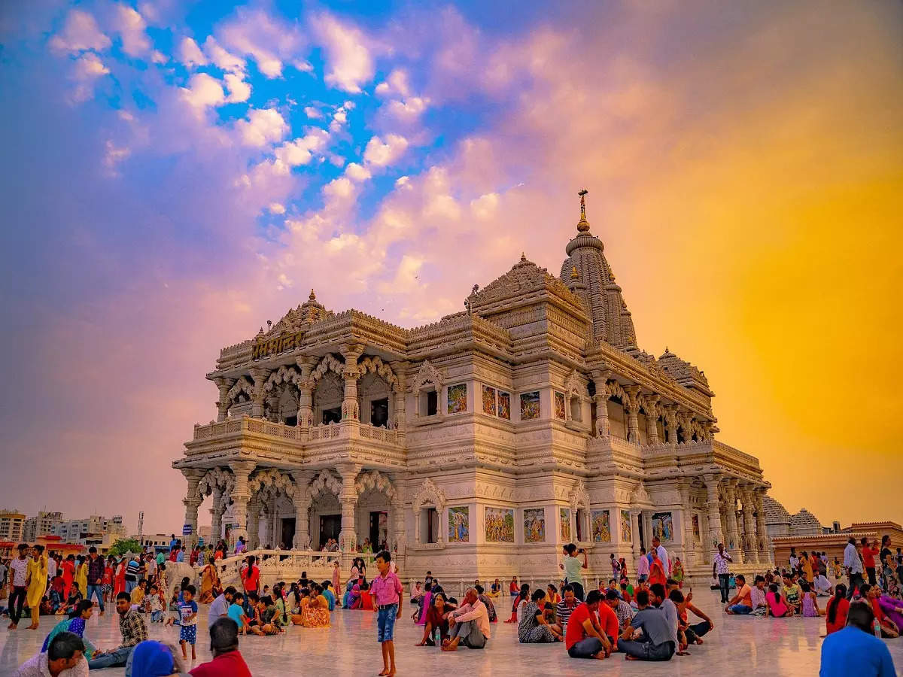
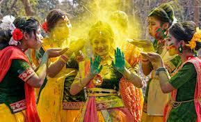
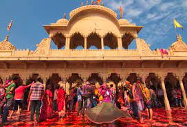

March is the best time to visit the party hub of India as many Goa hotels and homestays offer attractive prices during this time. Travellers can experience Shigmotsav or Goan Holi, the soothing climate, historic monuments, Indo-Portugese cuisine, bars and have the sandy coastline all to themselves . The weather remains pleasant in most parts of the country. Therefore, it is a great month to indulge in all tourist activities in India. For those who love adventure and water sports, March turns out to be an ideal month to visit the famous adventure sports destinations in India.
14' March -- Hoysala Mahotsava
It is an annual festival held in Belur, a historic town in the Hassan district of Karnataka state, India. The festival celebrates the rich cultural heritage of the Hoysala dynasty, which ruled parts of Karnataka between the 11th and 14th centuries.
Belur is famous for its magnificent Hoysala temples, such as the Chennakesava Temple, which is renowned for its intricate carvings and sculptures. During the Hoysala Mahotsava, the town comes alive with cultural events, including music and dance performances, art exhibitions, and heritage walks.
The festival is organized by the Department of Kannada and Culture, Government of Karnataka, and attracts visitors from all over India and abroad. The festival is usually held in the month of March and is a great opportunity to witness the unique Hoysala architecture and immerse oneself in the vibrant culture of Karnataka.

The Chennakesava Temple
It is one of the main attractions of the Hoysala Mahotsava in Belur. It is a 12th-century temple dedicated to Lord Vishnu and is known for its exquisite architecture and intricate carvings.
During the Hoysala Mahotsava, the temple comes alive with a variety of cultural events, including music and dance performances, art exhibitions, and heritage walks. Visitors can also witness the traditional rituals and ceremonies conducted at the temple during the festival.
One of the highlights of the Hoysala Mahotsava at the Chennakesava Temple is the special illumination of the temple complex. The temple is decorated with lights and colorful decorations, creating a magical atmosphere that is truly unforgettable.
Shree Shantadurga Temple
Shree Shantadurga Temple is a popular temple in the Indian state of Goa, and it is visited by many devotees during the festival of Shigmo. Shigmo is a spring festival celebrated in Goa, particularly by the Konkani and Marathi communities, with colorful processions, traditional folk dances, music, and other cultural events.
During Shigmo, the Shree Shantadurga Temple is decorated with lights and flowers, and special puja ceremonies are performed to honor the deity Shree Shantadurga. The temple is considered as one of the most important and ancient temples in Goa, dedicated to the goddess Shantadurga, who is considered as the goddess of peace and tranquility.
The temple has a rich history and is said to have been built during the 16th century, under the patronage of the Maratha ruler, Shahu Raje. The temple is located in the small village of Kavalem, in the Ponda district of Goa, and it is surrounded by scenic natural beauty.

15' March -- Sheetla Ashtami
Sheetala Ashtami is a Hindu festival dedicated to Goddess Sheetala Devi, an incarnation of Goddess Durga. Sheetala Ashtami is also known as Basora puja or Basoda puja (meaning previous night), is celebrated on the eighth day after the festival of colors, Holi. Most families cook the day before and eat stale food on the day of Sheetala Ashtami. Goddess Sheetala is believed to control smallpox, chickenpox, measles, and other ailments, and people worship her to prevent outbreaks of these diseases. No fresh food is prepared on this day. The word 'Sheetala' means coolness.

Sheetla mata mandir, Gurgaon
One of the nine Shaktipeeths in the country Sheetala Mata Devi in Gurgaon Village The Religious Temple pond, attracts a huge crowd of people, the year around, especially during Navaratri, around Diwali festival this temple holds two times a year in Chaitra and Ashadh months. A the situation like Kumbh is experienced during these Melas It is believed that the worship of this Shaktipeeth fulfills all the desires.
8' March -- Holi
Holi is a popular and significant Hindu festival celebrated as the Festival of Colours, Love and Spring.[1][9][10][11] It celebrates the eternal and divine love of the god Radha and Krishna.[12][13] Additionally, the day also signifies the triumph of good over evilas it commemorates the victory of Vishnu as Narasimha Narayana over Hiranyakashipu. Holi is originated and is predominantly celebrated in the Indian subcontinent but has also spread to other regions of Asia and parts of the Western world through the Indian diaspora.
The Banke Bihari Temple
Banke Bihari Temple is a Vaishnava Hindu temple situated in the town of Vrindavan, Mathura district of Uttar Pradesh, India. The temple is dedicated to Banke Bihari who is believed to be the combined form of Radha and Krishna. Banke Bihari was originally worshipped at Nidhivan, Vrindavan. Later, when Banke Bihari temple was constructed around 1864, the icon of Banke Bihari was moved to new temple.[2][3]
The icon of Radha Krishna's united form stands in the Tribhanga posture. Swami Haridas originally worshipped this devotional image under the name of Kunj-Bihari ("one who enjoys in the groves (Kunj) of Vrindavan").
Krishna upholding the Govardhan mountain in the Tribhanga pose
'Bānke' means 'bent', and 'Bihāri' or 'Vihāri' means 'enjoyer'. This is how Kṛiṣhṇa, who is bent in three places, got the name "Bānke Bihāri". According to Śrī Brahma-saḿhitā (verse 5.31), Brahma says the following about Kṛishna


Prem Mandir
Prem Mandir is a Hindu temple in Vrindavan, Mathura, India. It is maintained by Jagadguru Kripalu Parishat, an international non-profit, educational, spiritual, charitable trust.
The complex is on a 54-acre site on the outskirts of Vrindavan, and is dedicated to Lord Radha Krishna and Sita Ram. The temple structure was established by the fifth Jagadguru, Kripalu Maharaj. Figures of Shri Krishna and his followers depicting important events surrounding the Lord’s existence cover the main temple.
Construction began in January 2001 and the inauguration ceremony took place from 15 February to 17 February 2012. The temple was opened to public on 17 February. The cost was 150 crore rupees ($23 million). The presiding deity are Shri Radha Govind (Radha Krishna) and Shri Sita Ram. A 73,000 square feet, pillar-less, dome shaped satsang hall is being constructed next to Prem Mandir, which will accommodate 25,000 people at a time.
7' March -- Laddoo Holi, Barsana
While Holi is mainly the festival of colours, people in Brij Bhoomi celebrate Holi with flowers as well as Laddos (a rounded sweet). Barsana is the village of Radha Rani. There is a temple dedicated to Radha Rani on top of the Brahmagiri Hills.
The festival of Holi formally starts with the people of Nandgaon inviting the people of Barsana for the celebrations. This is known as Phag Amantran Utsav. Laddoo Holi is played on the same day in Barsana. Bundi Laddoos of bright yellow colour are thrown at each other in the temple. The entire place gets a hue of yellow. After all, yellow is the favourite colour of Shri Krishna.
On the next day, Lathmar Holi is played at Barsana and on the following day at Nandgaon.
Nandgaon
The festival of Holi formally starts with the people of Nandgaon inviting the people of Barsana for the celebrations. This is known as Phag Amantran Utsav. Laddoo Holi is played on the same day in Barsana. Bundi Laddoos of bright yellow colour are thrown at each other in the temple. The entire place gets a hue of yellow. After all, yellow is the favourite colour of Shri Krishna.
On the next day, Lathmar Holi is played at Barsana and on the following day at Nandgaon.
6' March -- Lathmar Holi, Barsana
This is an interesting tradition and Holi celebration where the women chase the men and beat them with sticks or lathi. Hence the celebration is known as Lathmar Holi. Barsana and Nandgaon celebrate Lathmar Holi with great zeal and pomp.
Krishna lived at Nandgaon while Radha resided at Barsana. During Holi, Krishna would visit Barsana to meet Radha. He would tease Radha and her friends a lot. This offended the Gopis and Radha so much that they would chase Krishna and his friends with lathis and beat them.
Barsana
Lathmar Holi takes place in Bharatpur and Karauli Not only in Mathura and Barsana, Lathmar Holi is also played in Rajasthan. People enjoy playing Lathmar Holi in Bharatpur and Karauli.
Lathmar Holi in Barsana: The next day, the Barsana women come out in full force for the Lathmar Holi. It is played in the Radha Rani temple which is beautifully decorated.
Thousands of locals in Barsana celebrated the famous ‘Lather Holi’. The annual event is famous in Barsana town near Mathura.
When compared to other regions, Lathmar Holi is celebrated with pomp and fanfare in the Mathura region since it is considered to be the birthplace of Lord Krishna. Date of 2023 Lathmar Holi in Barsana and Nandgaon


Shri Radha Rani Temple
Shri Radha Rani Temple, also called Shriji (Shreeji) Temple and Shri Laadli Lal Temple, is a historical Hindu temple, located in Barsana in Mathura district, Uttar Pradesh, India. The temple is dedicated to the goddess Radha. The main deities of the temple are Radha Krishna who are worshipped together in the form of Shri Laadli Lal which means beloved daughter and son of the town.
The temple is stretched on the top of Bhanugarh hills, which is about 250 meters in height.[1] The temple attracts huge crowd of devotees and tourists visiting temple from across the world for its most popular festivals - Radhashtami and Lathmar Holi.